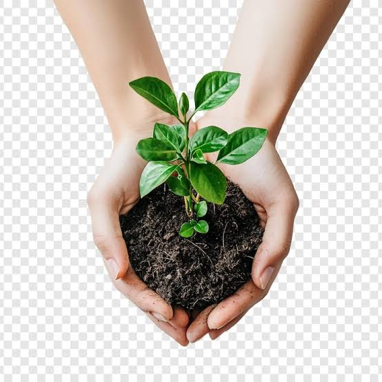

🌿 Cuidado Ambiental: Acciones que Transforman
Pequeños gestos, grandes cambios

💧 El agua: el tesoro más valioso
Sin agua no hay vida. Cuando llega la sequía por El Niño, aprendemos lo importante que es no desperdiciar ni una gota. Cuidar el agua no es solo cerrar la llave: es valorarla, respetarla y entender que todos dependemos de ella.
Algunas formas sencillas de cuidarla:
- Cerrar la llave mientras te cepillas los dientes o te lavas las manos: hasta 10 litros ahorrados cada vez
- Recolectar el agua de la ducha mientras esperas que salga fría para regar plantas o limpiar
- Reparar fugas: una gota constante desperdicia cientos de litros al mes
- No usar el inodoro como basurero: cada descarga gasta entre 6 y 12 litros de agua limpia
- Explicar a la familia por qué el agua es valiosa: cuando todos cuidan, alcanza para todos